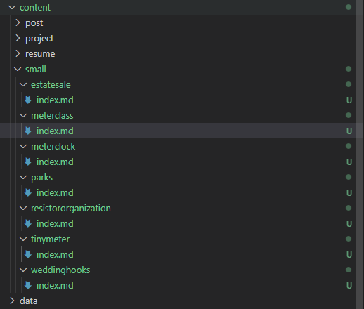
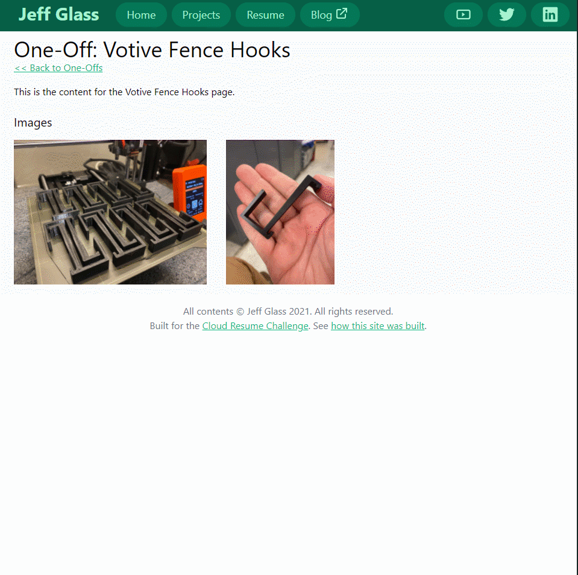

As I figure out my workflow for creating pages, especially the "One Offs", I want to keep things as simple and straightforward as can be for adding new content. The intention of the One Offs is a place to memorialize small, interesting things - things that shouldn't disappear into twitter, but aren't a full project writeup. To that end, I'd like to have some standard formatting for all of their individual pages that makes it simple to add a new piece of content. So let's work on the /layouts/small/single.html layout.
It turns out that there is no style being applied to external links currently, which is something I imagine I might want. So I'll add a css rule for <a> tags... and then add an ID to the label "Jeff Glass" in the header so it doesn't also get styled, and use a:not(#header-name) to prevent it from getting snagged by this new rule.
To make things a little easier at this point, I'll add the postcss-nesting module following the steps in the Tailwind docs. This did require refactoring my postcss.config.js file to use a list of require() statements instead of a map, as illustrated in the Tailwind Docs:
I'm also borrowing a bit of code from David Walsh to automatically style external links with the "external link" symbol... well, I would have except it seems embedded html inside markdown files is a bit cumbersome in Hugo. It seems its markdown renderer, Goldmark, only allows directly adding HTML attributes to header tags via markdown. Thankfully, Ana Ulin came to the rescue with their Raw HTML Shortcode.... Or rather, that was the plan, but the ::after selector is fiddly in some way I can't understand yet. So for now I'm just a css class called "no-style-link" to exclude links I don't want to be formatted using the :not() operator. I'm moving on.
(Some resources for when I come back to this: Stack Overflow, Geeks for Geeks, css-tricks)
It seems like the preferred way to keep image content near site content is through what Hugo calls Page Bundles, where a page is represented by a folder containing the content or a folder containing an _index.md file if the hierarchy is nested further. It looks like, if I just move my current "small" projects markdown files (Parks.md, meterclock.md) into folders with the same name and rename the files to "index.md", all of the formatting and templating work I've done so far is preserved. Well that's good at least.

Now, I'll chose a small project to work on. How about the Votive Fence Hooks project? I'll just drop a couple of pictures from my phone into the weddinghooks folder. And by using the following range commands, I can get all the images to appear nicely formatted on the page (this write-up was very helpful):
I then rebuilt and pushed my site to Github and... something I've done has broken the formatting/sorting of the small cards on the frontpage, and the auto-generating of the tags. Basically all my work from the previous post. Which is frustrating, but my generation code is still there. So something I've done recently has broken that functionality. I wonder if it was moving the content into Page Bundles?
Interestingly, the code still works when I serve locally with hugo... Oh, I must not have rebuilt with the -D flag on. That's better. Gotta remember that.
So now onto image display. Currently, I'm loading the whole, large image to the end user, then using CSS to scale it down, when what I'd like to do is have the image be rescaled at build-time and served at that size. It seems that, once again, Hugo Pipes are the answer, but sadly, there doesn't seem to be a way to intregrate pipes functionality with page bundling. There's a Hugo Mini-Course on image processing that seems the right track for that, but again, it specifies the images must be in the /assets folder.
Instead, let's look at Christian Sprecht's post on integrating Lightbox with Hugo. And the lightbox documentation makes it seem like a simple-enough process. I'll start by installing lightbox via npm using npm install lightbox2 --save-dev. Then I'll add the requisite references to the lightbox.css and lightbox.js files inside of my baseof.html template, so it's present on every page.
In actuality, it turns out to be easier to reference this CSS and JS from CDN's. Then, in my /layouts/small/single.html template, I'll transform the range code to the following:
{{ if gt (len (.Page.Resources.ByType "image")) 0 }}
<h2 class="pt-6 text-xl">Images</h2>
{{ with .Page.Resources.ByType "image" }}
<div class="flex flex-wrap pt-4">
{{ range . }}
<a href="{{ .RelPermalink }}" data-lightbox="image-set"><img src="{{ .RelPermalink }}" class="flex mb-4 mr-8 max-h-60"></a>
{{ end }}
</div>
{{ end }}
{{ end}}
This ensures that the h2 "Images" header only appears if there are actually images to display, and turns all the loaded images into Lightbox links. The links all get their data-lightbox attribute set to the same thing (in this case "image-set", but it could be anything) so that the lightbox gallery that pops up is scrollable directly between pictures.

Well that wasn't too hard! Now any images that live inside a small-project folder will be automatically added to a lightbox. Neato!
During some cleanup, I encounted an odd issue with how the slug images were appearing/being found on the main page. This Stack Overflow post cleared up some things about how object-cover works, and I found some guidance on how to reference images in the same folder as content. During this modification, I accidently screwed up the default summary.html template (I editted it instead of the summary.html template for the 'small' taxonomy), but I found a Stack Overflow post on using git to view past versions of files, which helped me find the previous syntax and restore things. Since I figured the issue was in a single line, I didn't do anything fancy like a git bisect, but that's a tool in the pocket for the future.
aslkhad